This tutorial takes a blank ESP32-S3-WROOM-1 board to a robot that connects to SPIDER over this PC's own Bluetooth, automatically, every time it powers up. No pairing, no gateway board, no Arduino and no esptool. At the end you move an MG90S micro servo from SPIDER's robot screen and watch it in a live 3D twin.
Every step and screenshot below was done on real hardware on 2026-10-07: a YD-ESP32-S3 N8R2 board on COM4.
| You will do | Time |
|---|---|
| Wire the servo | 2 min |
| Flash MicroPython with SPIDER's built-in flasher | about 75 s |
| Install the robot script and switch on Bluetooth LE auto-connect | about 20 s |
| Turn on Bluetooth LE in SPIDER, then the robot connects | 3-7 s |
0. What you need
- ESP32-S3-WROOM-1 board. This one is the YD-ESP32-S3 N8R2 by VCC-GND, a clone of Espressif's DevKitC-1. It has 8 MB flash, 2 MB PSRAM, two USB-C ports ("COM" through a CH343 chip, and "USB" native) and an RGB LED on GPIO48. Any ESP32-S3-WROOM-1 board works; only the board preset changes.
- MG90S micro servo (metal gear, 4.8-6 V). Three wires: orange = signal, red = +5 V, brown = ground. An SG90 (plastic gear, yellow or orange signal wire) works the same way.
You also need:
- A USB-C data cable. Some cables only charge. If no COM port appears, try another cable first.
- SPIDER running (Godot 4.7.2 .NET).
- A PC with Bluetooth. Most laptops have it; on a desktop, any Bluetooth 4.0+ USB dongle works. Bluetooth must be switched on in Windows.
- Python 3 (python.org), only for the Bluetooth LE helper. SPIDER installs the one package it needs,
bleak(MIT), when you press a button in step 10. - The MicroPython firmware for the ESP32-S3:
ESP32_GENERIC_S3-20260824-v1.29.0.binfrom https://micropython.org/download/ESP32_GENERIC_S3/. Save it infirmware/micropython/firmware/. MicroPython is MIT-licensed, so it is safe to sell with.
1. Wire the servo
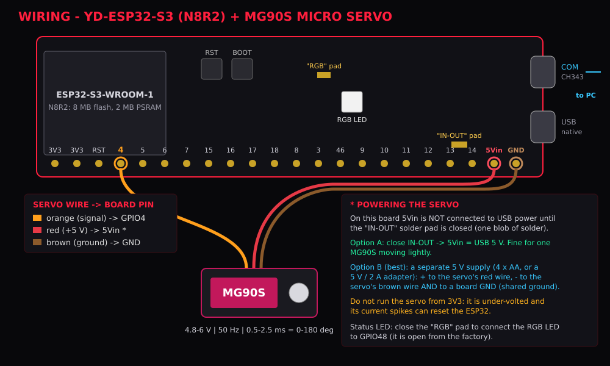
| Servo wire | Board pin | Why |
|---|---|---|
| orange (signal) | GPIO4 | SERVO_PIN = 4 in servo_robot.py. Any free GPIO works if you change that line. |
| red (+5 V) | 5Vin, or an external 5 V supply | The servo needs 4.8-6 V. See Powering the servo below. |
| brown (ground) | GND | The ground must be shared with the board, or the signal means nothing to the servo. |
Powering the servo. On this board the 5Vin pin is not connected to USB power from the factory.
- Option A (simplest): close the "IN-OUT" solder pad on the back of the board with one blob of solder. 5Vin then carries the USB 5 V. That is fine for one MG90S moving lightly.
- Option B (best): use a separate 5 V supply, such as 4 x AA or a 5 V / 2 A adapter. Connect its + to the servo's red wire. Connect its - to the servo's brown wire and to a board GND pin. Use this as soon as the servo carries a load, or if the board resets when the servo moves.
With a breadboard power module (e.g. Elegoo MB102, fed by a 6.5-12 V adapter) it is four wires. Note wire 4: the module's GND rail must also go to an ESP32 GND pin. A servo whose brown wire only goes to the ESP32 has no path back to the module, and gets no power at all.
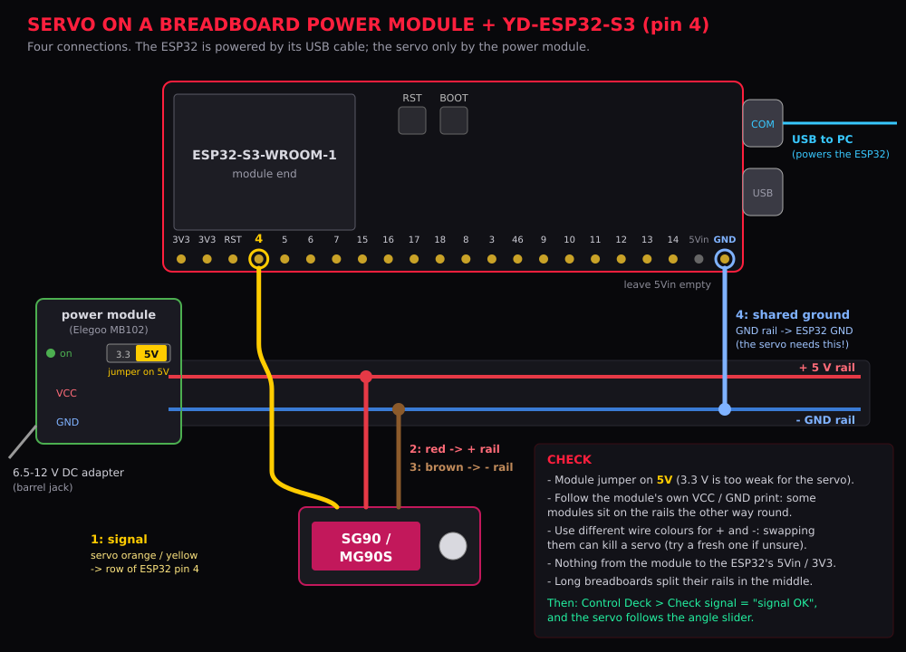
Do not power the servo from 3V3. At 3.3 V the servo is under-volted, and its current spikes can reset the ESP32.
You can flash the board before wiring anything. The servo only has to be connected by step 11.
Optional: the status LED. The RGB LED on GPIO48 only works after you close the "RGB" solder pad, which is open from the factory. Everything else works without it, and the same status is shown over USB (step 12).
2. Plug the board into the PC
Use the USB-C port marked COM. It goes through the CH343 USB-serial chip, which gives the cleanest automatic reset into the bootloader. Windows 10/11 normally installs the CH343 driver by itself, and the board then shows up as USB-Enhanced-SERIAL CH343 (COMx). If no port appears, try another cable, then install the CH343 driver from WCH's website.
3. Open Flash Bay
LAYOUT > Flash Bay. This layout opens the flasher next to the Serial Monitor and the Console.
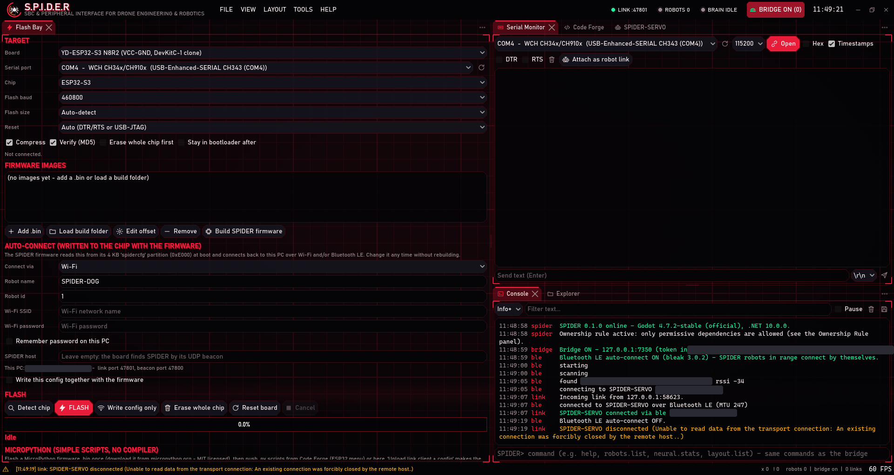
4. Pick the board and the port
In TARGET:
- Board:
YD-ESP32-S3 N8R2 (VCC-GND, DevKitC-1 clone). For a genuine Espressif board, pickESP32-S3-WROOM-1 (DevKitC-1). The preset sets the chip, flash size, reset method and status LED pin. - Serial port: the CH343 port, here
COM4 - WCH CH34x/CH910x (USB-Enhanced-SERIAL CH343 (COM4)). Press the refresh button next to it if you plugged the board in after opening SPIDER. - Leave Flash baud 460800, Flash size Auto-detect and Reset Auto as they are.
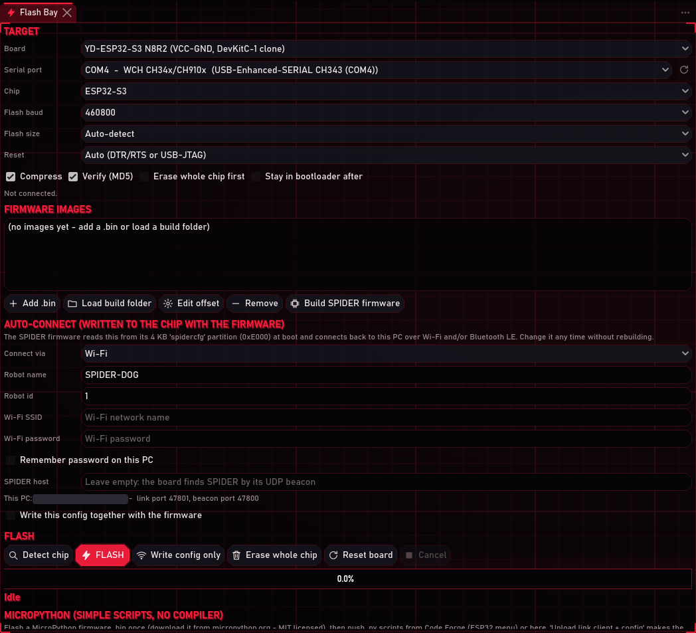
5. Detect the chip
Press Detect chip in the FLASH section. SPIDER sends the board into its ROM bootloader by toggling the DTR/RTS lines, so you do not have to press any buttons. It then reads the chip type, MAC address and flash size, and resets the board back to normal.
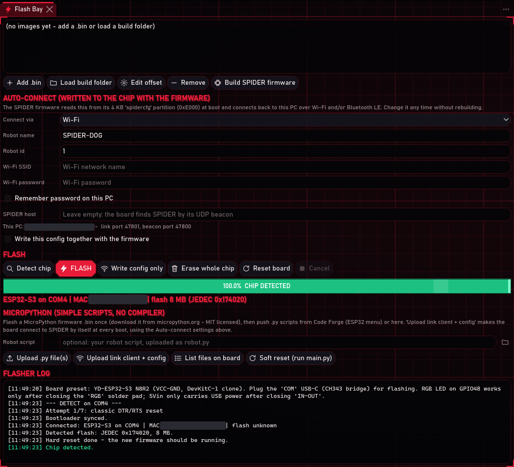
What the log means:
Attempt 1/7: classic DTR/RTS reset <- the automatic reset into the bootloader
Bootloader synced. <- the chip answered SPIDER's SYNC packets
Connected: ESP32-S3 on COM4 | MAC xx:xx:xx:xx:xx:xx
Detected flash: JEDEC 0x174020, 8 MB. <- read from the flash chip's own ID
Hard reset done - the new firmware should be running.
If detection fails 7 times, put the board into the bootloader by hand: hold BOOT, tap RST, let go of BOOT, then press Detect chip again.
6. Add the MicroPython firmware
- Press Add .bin and pick
firmware/micropython/firmware/ESP32_GENERIC_S3-20260824-v1.29.0.bin. - SPIDER sees that this is a full-flash image (bootloader + partition table + app) and places it at 0x000000. A merged image only boots from 0x0. SPIDER refuses to flash it anywhere else, so it cannot brick the boot sector by accident.
- Tick Erase whole chip first. This is recommended when you switch firmware: it wipes any old file system, so MicroPython starts clean.
- Leave Write this config together with the firmware off. That option writes the auto-connect config to
the
spidercfgpartition (0xE000) used by SPIDER's own ESP-IDF firmware. MicroPython's partition table has no such partition; 0xE000 is inside its NVS area. With MicroPython, the same settings are uploaded asspider_config.jsonin step 9 instead.
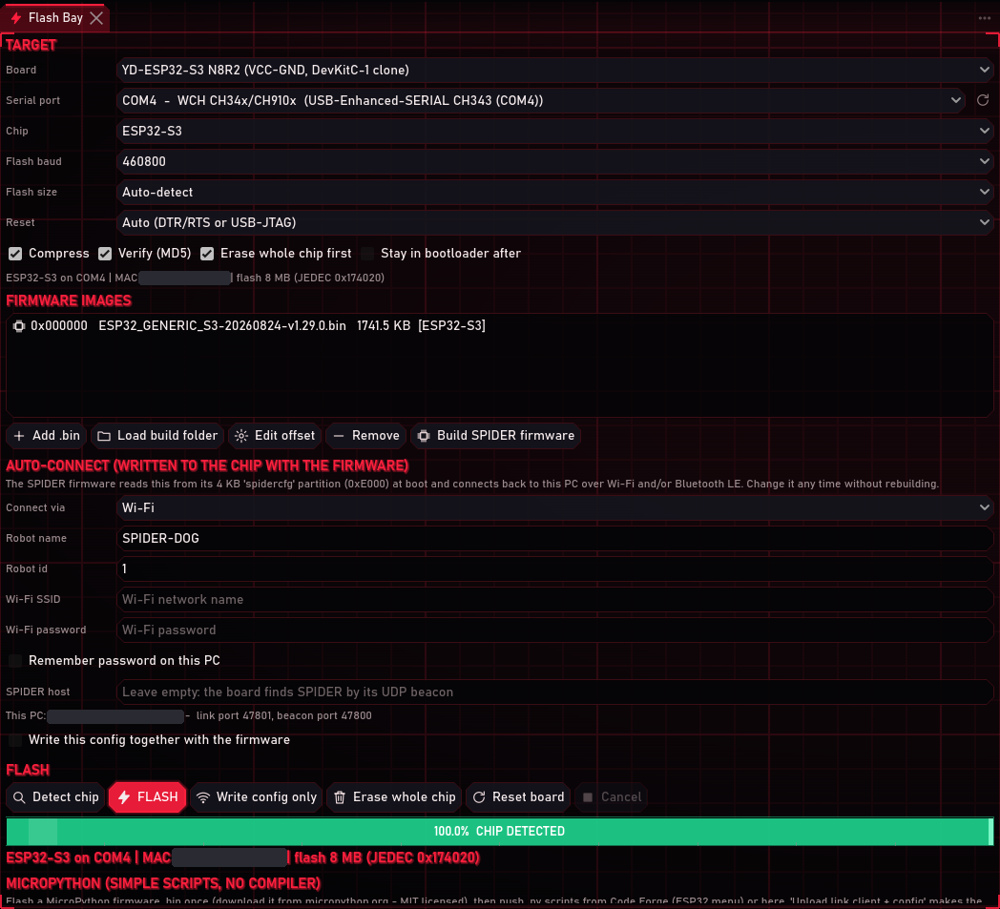
7. Flash
Press FLASH. The bar goes through three stages.
Erasing (about 25 s for 8 MB):
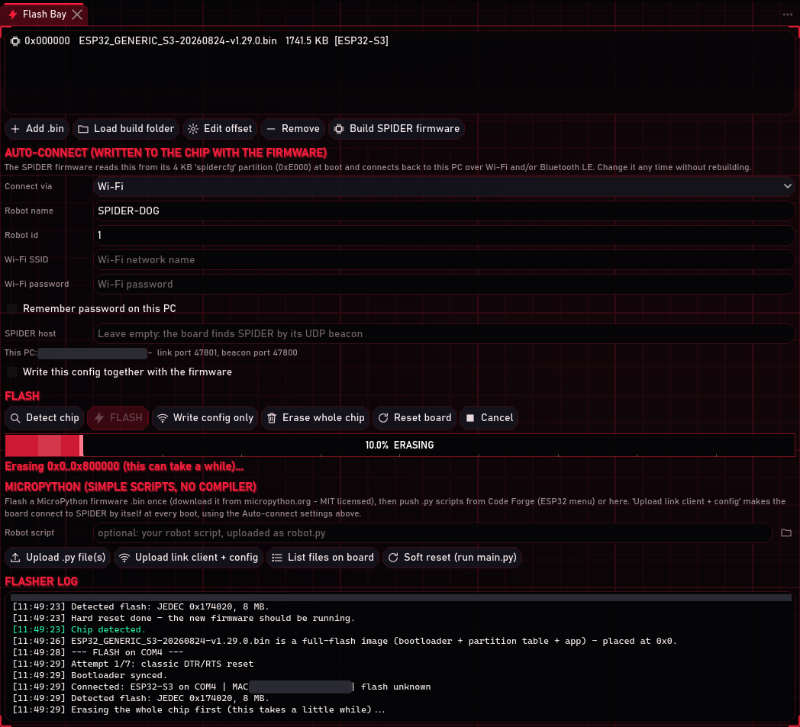
Writing. The 1,783,296-byte image is compressed to 1,163,396 bytes (65%) on the PC and sent at 460800 baud. The stage line shows bytes, speed and ETA:
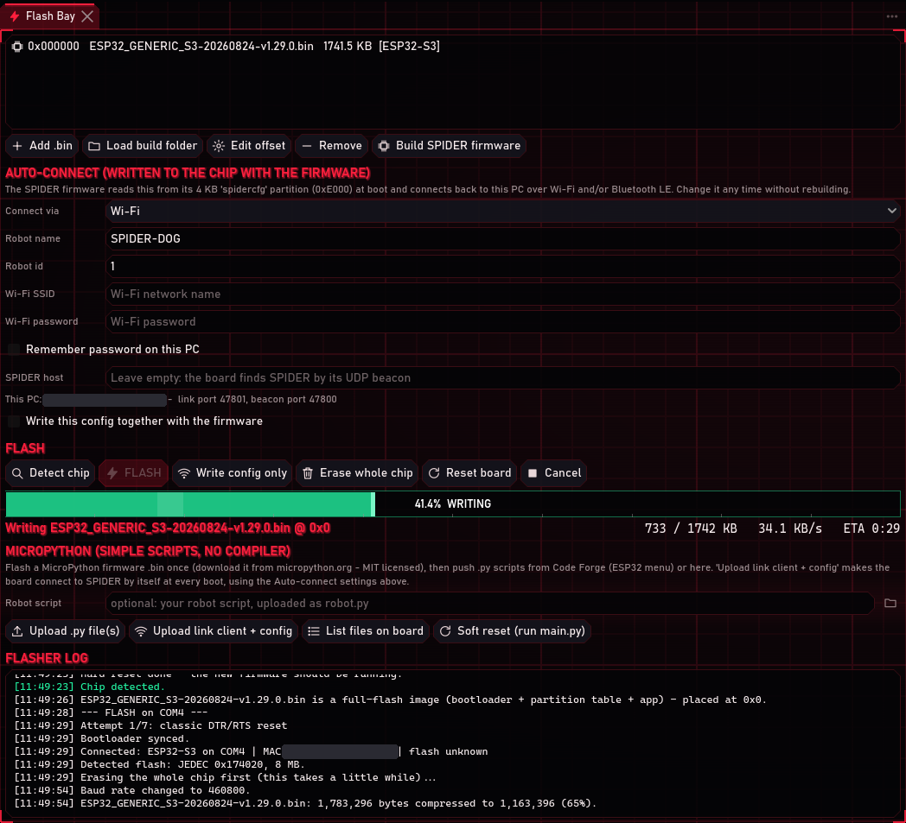
Verify and reset. SPIDER asks the chip for the MD5 of what it wrote and compares it with the file
(All segments verified (MD5 match)), then resets the board into MicroPython:
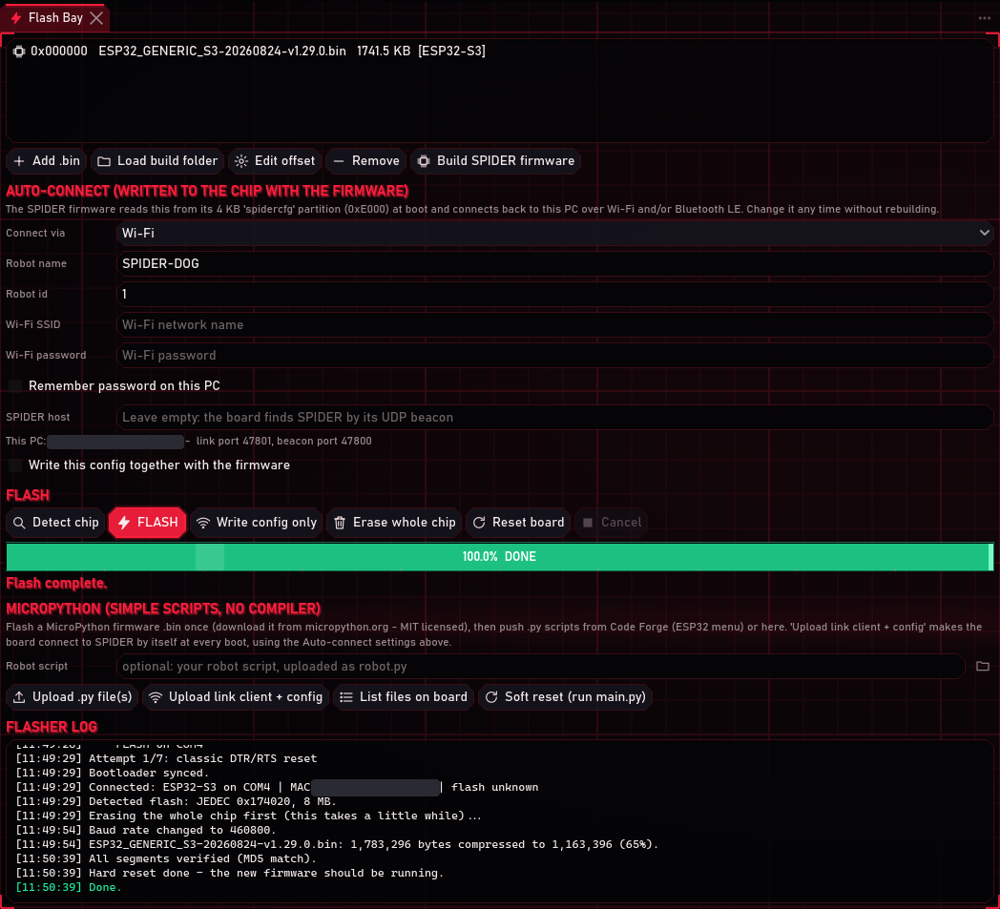
Measured: 73 s from pressing FLASH to "Done", including the full-chip erase.
8. Turn on Bluetooth LE auto-connect and pick the robot script
This is the option that makes the board auto-connect to this PC over Bluetooth. In AUTO-CONNECT:
- Connect via:
Bluetooth LE - Robot name:
SPIDER-SERVO. This is the name the board advertises, and its title in SPIDER. - Robot id:
5(any number, unique per robot) - Wi-Fi SSID, password and SPIDER host are not used for Bluetooth LE.
In MICROPYTHON (SIMPLE SCRIPTS, NO COMPILER):
- Robot script: press the folder button and pick
firmware/micropython/examples/servo_robot.py.
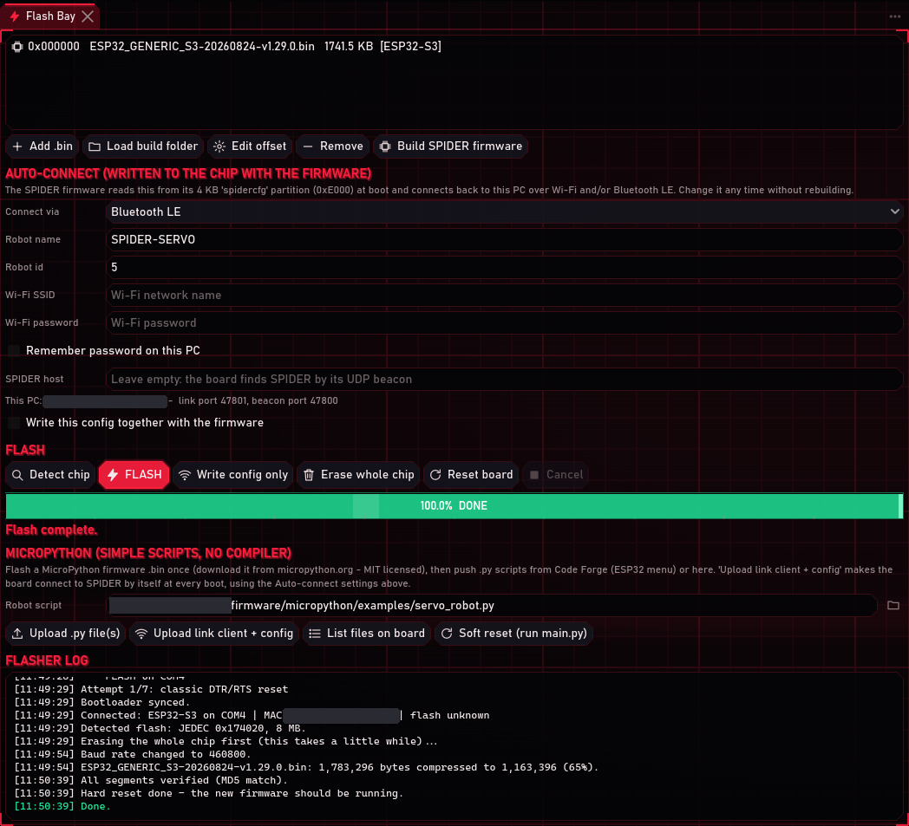
The
Flash complete.bar in this screenshot is from step 7. Nothing is sent to the board until you press the button in step 9.
9. Upload the link client and config
Press Upload link client + config. Over the USB port, using MicroPython's raw REPL, SPIDER writes:
| File on the board | What it is |
|---|---|
spider_link.py |
SPIDER's link client: Bluetooth LE + Wi-Fi transports, the SPIDER Link protocol, the status LED |
spider_config.json |
The settings from step 8: transport ble, name, id, LED type and pin |
robot.py |
Your robot script, here servo_robot.py |
main.py |
Two lines that start spider_link.run() at every boot |
It then lists the board's files and soft-resets the board. The bar shows INSTALLED:
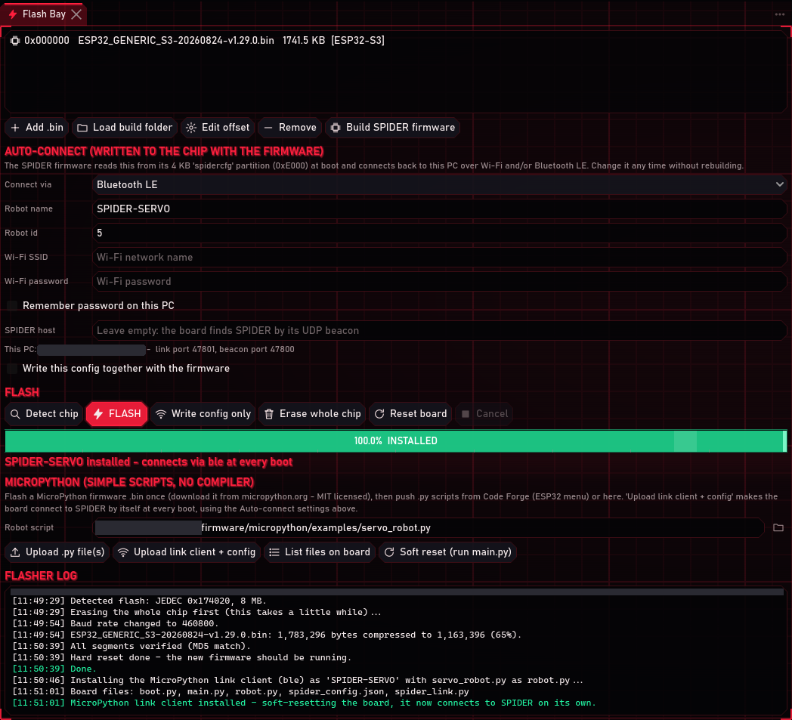
From now on, every time the board gets power it starts advertising as SPIDER-SERVO and waits for SPIDER. It no longer needs the USB cable for data, only for power.
10. Turn on Bluetooth LE in SPIDER
Open Link Hub (VIEW menu, or the Robot Ops layout). In BLUETOOTH LE (THIS PC):
- First time only: press Install Bluetooth support. SPIDER runs
pip install bleak==3.0.2with your Python. It then checks the licence of every package that came with it against the ownership rule, and refuses to enable Bluetooth if anything is not permissive. All of them are MIT. Afterwards the button reads bleak 3.0.2 installed - verify licences; press it any time to re-check. - Switch on Auto-connect Bluetooth LE robots.
SPIDER starts its Bluetooth helper, which scans for boards that advertise the SPIDER service. Each one it finds is connected automatically; there is no Windows pairing dialog. In this run SPIDER-SERVO was online 5 s after the switch was turned on:
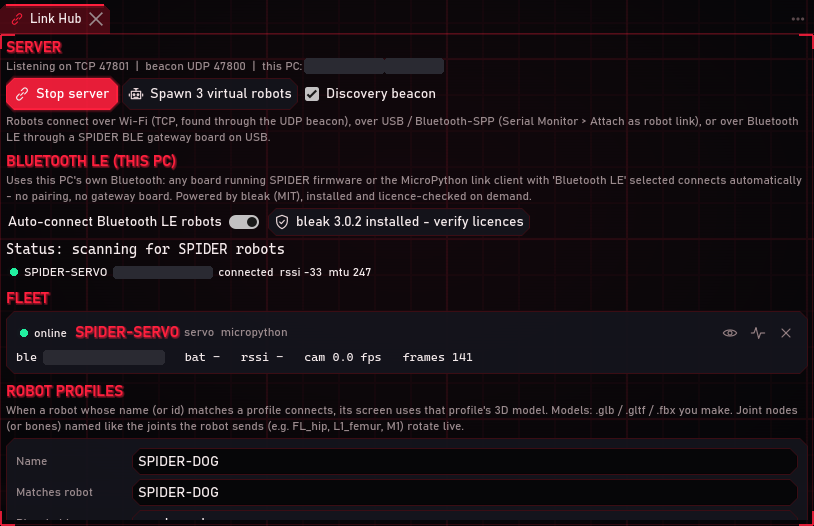
The setting is remembered: the next time SPIDER starts, Bluetooth LE auto-connect starts with it. The status line says scanning for SPIDER robots even while one is connected, because SPIDER keeps looking for more.
11. Drive the servo
A robot screen opens for SPIDER-SERVO. Because servo_robot.py reports a servo, the screen shows a
SERVO row, and the 3D twin is S.P.I.D.E.R.'s built-in MG90S model at its real size (the corner shows its size in
millimetres and the grid squares in view); its output gear follows the real angle. Drag to orbit, scroll to zoom.
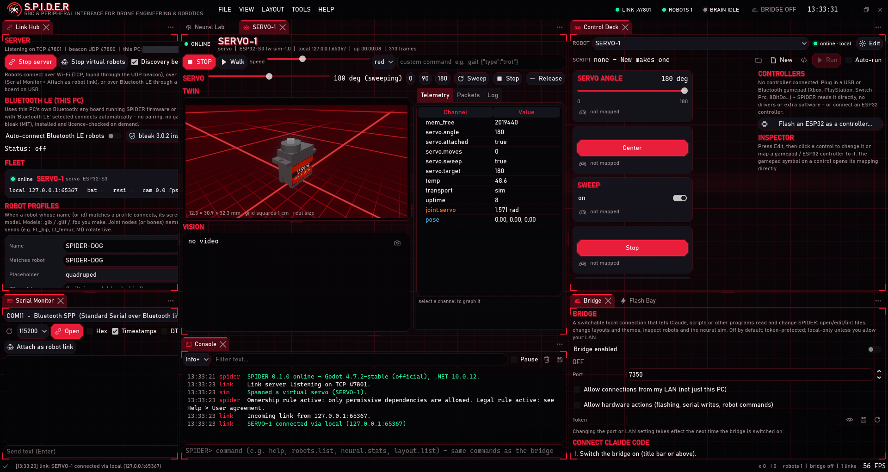
The two pictures in this step were taken with the virtual servo (Tools > Virtual robots..., SERVO-1), which answers
the same commands as servo_robot.py. With your board the robot is called SPIDER-SERVO, and the link and transport
read ble instead of local and sim.
| Control | Command sent | What the servo does |
|---|---|---|
| Slider | servo <angle> |
Follows the slider while you drag (25 updates a second). A single jump, such as a button or a click on the bar, moves smoothly at 240 deg/s. |
| 0 / 90 / 180 | servo 0 / servo 90 / servo 180 |
Goes to that angle |
| Sweep | sweep |
Sweeps 0 to 180 and back until stopped |
| Stop | stop |
Holds where it is |
| Release | detach |
Stops the PWM signal: the servo goes limp and saves power |
| Command box | e.g. servo {"angle": 120, "speed": 90} |
Any command, with JSON arguments |
| Command box | speed 120 |
Degrees per second for single moves (10 to 1000; the Control Deck's Speed slider sets 30 to 600) |
| Command box | cal {"at0": 3, "at90": 88, "at180": 176} |
Calibrates the servo: the angles at which the horn is really at 0, 90 and 180 (see below) |
The servo's speed is in degrees per second, so the robot screen leaves out the 0 to 3 Speed slider that walking robots have next to Walk.
Calibrate it once. Every MG90S is a little different: with the standard pulses many turn a few degrees past 0 and
180, and their middle can be a degree or two off. Move the slider until the horn is really at 0, 90 and 180, note the
angles, and send them: cal {"at0": 3, "at90": 88, "at180": 176}. The board saves the servo's own pulses
(servo_cal.json, kept through restarts and uploads) and answers with them. cal shows them, cal reset goes back to
the defaults, and pulse 2450 sends a raw pulse for a servo that cannot reach an end with its slider (then
cal {"min_us": ..., "mid_us": ..., "max_us": ...}).
While sweeping, the label reads (sweeping) and the telemetry table shows the live angle:
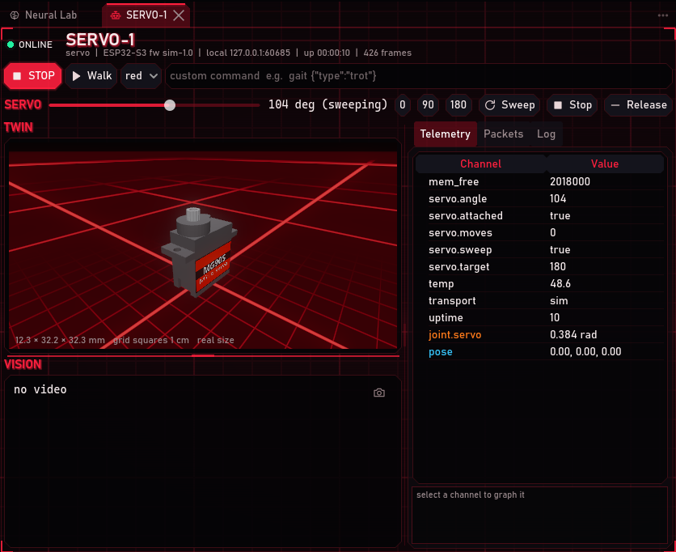
The Telemetry tab streams 4 times a second: servo.angle, servo.target, servo.sweep, servo.attached,
servo.moves, plus mem_free, chip temp (deg C), uptime (s) and transport. Click a channel to graph it.
Packets shows every frame in hex; Log shows the robot's log and command replies such as moving to 120.
What SPIDER can and cannot see: the angle in telemetry is the angle the ESP32 is commanding. An MG90S has no position feedback, so SPIDER cannot tell whether the horn really moved. If the twin moves but the servo does not, check power and the signal wire (see Troubleshooting).
12. Watch the board's status over USB
Yes, you can watch the board's status over USB even after flashing. The CH343 port stays a serial console, and
spider_link.py prints every status change with a [spider] prefix.
In Serial Monitor, pick the same port at 115200 and press Open. To see the boot from the start, press the board's RST button. You can also tick and untick RTS in the Serial Monitor: RTS is wired to the chip's reset.
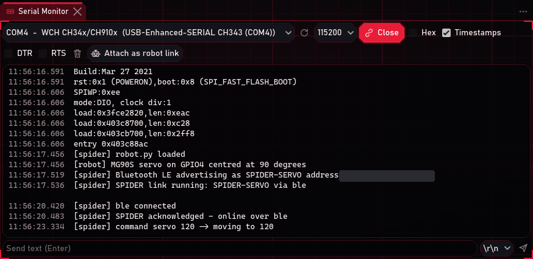
rst:0x1 (POWERON),boot:0x8 (SPI_FAST_FLASH_BOOT) <- ROM boot text
[spider] robot.py loaded
[robot] MG90S servo on GPIO4 centred at 90 degrees
[spider] Bluetooth LE advertising as SPIDER-SERVO address xx:xx:xx:xx:xx:xx
[spider] SPIDER link running: SPIDER-SERVO via ble
[spider] ble connected <- the PC connected, 2.9 s after advertising began
[spider] SPIDER acknowledged - online over ble <- SPIDER accepted the robot
[spider] command servo 120 -> moving to 120 <- every command, as it arrives
Close the Serial Monitor (press Close) before flashing or uploading. A COM port can only be open in one place at a time.
The status LED (after closing the "RGB" pad) shows the same states:
| LED | Meaning |
|---|---|
| blue, blinking | advertising: waiting for SPIDER to connect |
| amber | Bluetooth connected, waiting for SPIDER's acknowledge |
| green | online: SPIDER acknowledged the robot |
| magenta flash | a command just arrived |
13. What happens when the board resets
Unplug the board, press RST, or let the battery die and come back. The robot reconnects by itself.
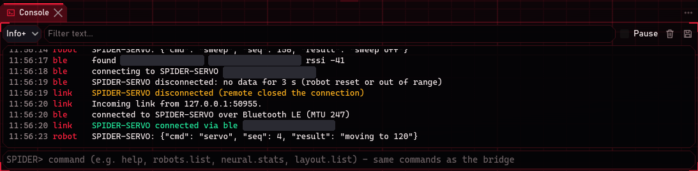
Three things make this fast and reliable:
- A new random Bluetooth address at every boot. Windows keeps a dead link to the old address alive for about 10 s, and refuses to connect to that address until then. With a fresh address, the rebooted board looks like a new device and can be connected immediately.
- A silence watchdog. The board sends a heartbeat every second. If nothing arrives for 3 s, SPIDER's helper drops the dead link itself instead of waiting for Windows (no data for 3 s (robot reset or out of range) in the log).
- Retry with back-off. A failed connect is retried, waiting 1 s longer each time (at most 30 s). It never gives up while Auto-connect is on.
Scanning is kept short, so Bluetooth headphones keep working. The PC's Bluetooth radio also carries your headphones, mouse and keyboard, and non-stop scanning makes Bluetooth audio stutter. SPIDER's helper therefore scans continuously only while it is hunting: no robot connected, a robot just dropped (for 60 s), or the first minute after start. Once your robots are connected, it takes a 3 s look for new ones every 30 s. Link Hub shows connected - looking for new robots 3 s every 30 s. A dropped robot is still noticed within 3 s by the silence watchdog, so reconnecting does not get slower.
Measured on this board (2026-10-07, with the scanning above) with
tests/ble_reconnect_test.py: 5 resets in a row, all 5 back online after
3.8-5.7 s (average 4.7 s). A reset while scanning was idle came back in 6.8 s. That time includes the board's
own boot, about 3 s. Run the test yourself, with SPIDER open and its bridge on:
python tests/ble_reconnect_test.py COM4 SPIDER-SERVO 8
14. Change the robot script
robot.py is plain MicroPython. spider_link.py calls these optional functions:
| Hook | Called | Use it for |
|---|---|---|
KIND = "servo" |
once | the model type of the 3D twin (servo, quadruped, hexapod, drone, ...) |
setup() |
once at boot | set pins and starting positions |
loop() |
every ~20 ms | smooth motion, sensors, state machines |
telemetry() |
4x per second | return a dict; it appears in the Telemetry tab |
joints() |
4x per second | return {"joint name": radians} to move the 3D twin |
on_command(cmd, args) |
per command | return a reply string, or None for "unknown command" |
To change it, edit firmware/micropython/examples/servo_robot.py in Code Forge (or copy it and pick the copy in
step 8). Then press Upload link client + config again. You do not need to re-flash MicroPython; uploading
takes about 15 s. To change only the script, use Upload .py file(s) (save it as robot.py), then
Soft reset (run main.py).
The quickest way: open the script in Code Forge, edit it and press Run (F5). A robot script is MicroPython for
the board (it imports machine), so it cannot run on the PC. Run therefore installs it on the board as robot.py
and restarts the board, which reconnects to SPIDER a few seconds later with the new code. Pick the board's port
in Flash Bay once so Run knows where to send it. Other MicroPython scripts (e.g. blink_micropython.py) are run
on the board directly. Plain desktop Python still runs on the PC.
To move the servo to another pin, change SERVO_PIN = 4. Avoid these pins:
- GPIO 0, 3, 45 and 46 (strapping pins)
- 19/20 (native USB) and 43/44 (the serial console)
- 26-32 (the module's flash and PSRAM; 33-37 too on octal-PSRAM "R8" modules)
- 48 (the RGB LED)
Troubleshooting
| Symptom | Fix |
|---|---|
| No COM port | Use a data cable and the COM USB-C port. Install the CH343 driver if Windows did not. |
| Detect fails 7 times | Close the Serial Monitor and any other program using the port. Then hold BOOT, tap RST, release BOOT, and retry. |
| "... is a full-flash image ... and must be written at 0x0" | Select the image, press Edit offset and set 0x0, or remove it and add it again. SPIDER places it at 0x0 by itself. |
| The robot never appears | Check that Bluetooth is on in Windows and Auto-connect Bluetooth LE robots is on. If the Console says Bluetooth LE needs Python 3, install Python or set Settings > Tools > Python path. Check the Serial Monitor: the board must print via ble. If it prints transport is 'wifi', set Connect via: Bluetooth LE and upload again (step 9). |
| Robot first shows as an address (like AA:BB:CC:...) | It was connected before its name arrived. The name follows a moment later. |
| Bluetooth headphones stutter or drop while SPIDER runs | Restart SPIDER (Run SPIDER.cmd) to get the headphone-friendly scanning, then check that Link Hub says connected - looking for new robots 3 s every 30 s. Continuous scanning only runs while a robot is missing. When you are not using robots, switch Auto-connect Bluetooth LE robots off. |
| Connected, then drops every few seconds | Another device (a phone app such as nRF Connect) is connected to the board. A board accepts one connection; disconnect the other device. |
| Twin and telemetry move, the servo does not | Almost always no 5 V at the servo: close the IN-OUT pad (Option A) or use an external 5 V supply with a shared ground (Option B). Step-by-step checks: The servo does not move. |
| The board resets when the servo moves | The servo's current spikes are pulling down USB power. Use Option B. Never power it from 3V3. |
| The servo buzzes at the end of its travel, turns past 0 or 180, or its middle is off | Some MG90S units cannot use the full 0.5-2.5 ms range, and each one's middle differs a little. Calibrate it: cal {"at0": 3, "at90": 88, "at180": 176} (step 11). |
| The LED stays dark | Close the RGB solder pad (GPIO48). The serial console shows the same status. |
| Port busy / access denied when flashing | Press Close in the Serial Monitor (or quit the other program using the port) first. |
| Flashing or Bluetooth misbehaves, windows act odd | Check the first Console line: it must say Godot 4.7.2. If SPIDER warns that it is running on an older Godot (e.g. 4.4.1), close it and start it with Run SPIDER.cmd. |
| Something went wrong and the Console is gone | Every session's Console is also saved in %APPDATA%\SPIDER\logs\spider-<date>-<time>.log (the last 15 sessions). |
The servo does not move
Work through these in order. The first check tells you which half the problem is in.
- Is the signal leaving the board? Press Check signal in the Control Deck (it sends the
diagcommand). The board measures the real electrical level on its own servo pin and answers at the bottom right of the deck, for example GPIO4: 50 Hz, pulse 1500 us (should be 50 Hz, 1500 us) - signal OK; a wire IS attached to GPIO4 (x4.6). It also measures the pin's capacitance with the chip's touch sensor: a jumper wire plus a servo cable reads several times higher than a bare pin, so it tells you whether your signal wire is really in pin 4's row. signal OK + wire IS attached means the board, the firmware, SPIDER and the wire up to the breadboard all work. The problem is then at the servo end: the plug, the servo's power or the servo itself (steps 2-6). NO wire seems attached means the signal wire is in the wrong breadboard row. This was checked on the tutorial's board on 2026-10-07. If the reply says signal WRONG, or no reply comes, the robot is offline or the board is not runningservo_robot.py. - Are the pin headers soldered? This board ships with its two pin header strips loose in the bag. A jumper wire or header pin pushed into a bare hole usually does not make contact. Solder the headers, or the signal and ground never reach the servo, even though the chip outputs them.
- Is the signal wire on pin 4? The signal wire is orange on an MG90S and yellow or orange on an SG90.
Hold the board with the USB ports at the bottom. On the left header the pins from the top are
3V3,3V3,RST,4: the signal goes on that 4th pin. On the other header the labels40,41and42are different pins. On a breadboard, check the wire is in the same 5-hole row as pin 4. - Is the ground shared? The servo's brown wire goes to the supply's -, and the supply's - must also be
wired to a
GND/Gpin on the board (see the power module diagram). Without that common ground the servo cannot read the signal. Connecting only the servo's brown wire to the ESP32's GND is not enough: then the servo has no way back to its own supply and gets no power. On a breadboard, many power rails are split in the middle: a ground on the left half does not reach the right half. - Does the servo get 4.8-6 V? Measure across the servo's red and brown wires with a multimeter while it is connected. - 4.8-6 V: right. Use 4 x AA, a 5 V adapter, or a USB power bank with a breakout. - Under about 4.5 V (one Li-ion / LiPo cell): too weak. - 0 V: the supply is off or not connected. - Over 6 V (a 9 V battery, a 12 V adapter): this can destroy an SG90 / MG90S.

The supply must give at least 1 A: a servo draws far more than the board when it starts moving. Using the board's 5Vin instead needs the IN-OUT pad closed, as explained in step 1. 6. Test without the power module. Briefly move the servo's red wire to the ESP32's 3V3 row (the first pin of the left header) and its brown wire to the ESP32's GND row (the last pin), with the signal on pin 4. Then press Sweep. An unloaded servo usually moves slowly even at 3.3 V. - It moves: the signal and the servo are fine. The problem is the power module path: its jumper, the rails it feeds, or the adapter (the module needs 6.5-12 V in to give 5 V out). - It does not move: the signal is not reaching the servo's signal input. Check the servo plug end: a servo plug is brown (-) | red (+) | orange (signal), and the signal jumper must sit in the orange socket, at the edge opposite brown, pushed fully in.
Put the servo back on the module afterwards: 3V3 is only for this test. 7. Is the servo alive? Try another one (SG90s often come in packs), or the same one on a servo tester. A servo that got its power backwards is usually dead. A few cheap servos also ignore a 3.3 V signal when powered at 6 V. Run them at 5 V instead.
Press Release only when you want the servo limp: it cuts the signal on purpose. Any angle, or Center, turns the signal back on.
SG90 instead of MG90S: both work unchanged. Same 50 Hz signal, 0.5-2.5 ms pulses and 4.8-6 V. The SG90 has
plastic gears and less torque. If it buzzes at the ends of its travel, calibrate it with cal (step 11).